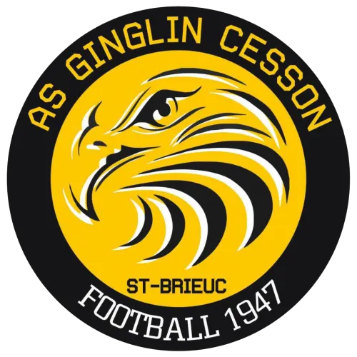
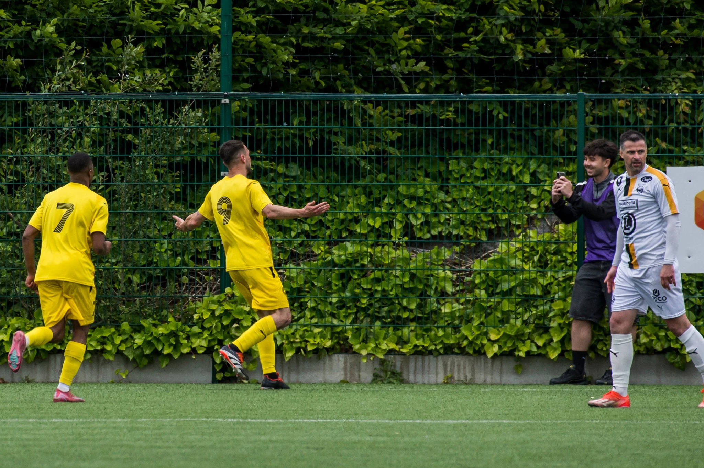

CHARGÉ DE
COMMUNICATION
AS Ginglin Cesson
Je m'occupe de toute la comm' du club. Affiches de match, résultats du week-end, annonces CDF. Tout ce qui sort sur Instagram et Facebook, c'est moi. Le week-end je suis au stade avec l'équipe première, objectif ou téléphone en main.

LES MEILLEURS VISUELS
LES AFFICHES
LA COMM' EN CHIFFRES
Facebook
2,7M
Vues
+5,8%
19,6K
Interactions
+13,8%
26,3K
Clics sur un lien
+304,2%
639
Followers en plus
+9,6%
Instagram
3,0M
Vues
+1 500%
87,6K
Couverture
+30,8%
43,7K
Interactions
+2 800%
814
Followers en plus
+367,8%

LA SUITE ?
L'année prochaine je suis en Bachelor à MyDigitalSchool, et j'espère pouvoir rester à Ginglin, sans certitude pour l'instant. On est en train de construire quelque chose avec ce club, l'identité visuelle avance, les réseaux gagnent en audience, et l'équipe vient de monter en National 2, une saison historique pour le club. J'ai envie de faire partie de cette nouvelle aventure.